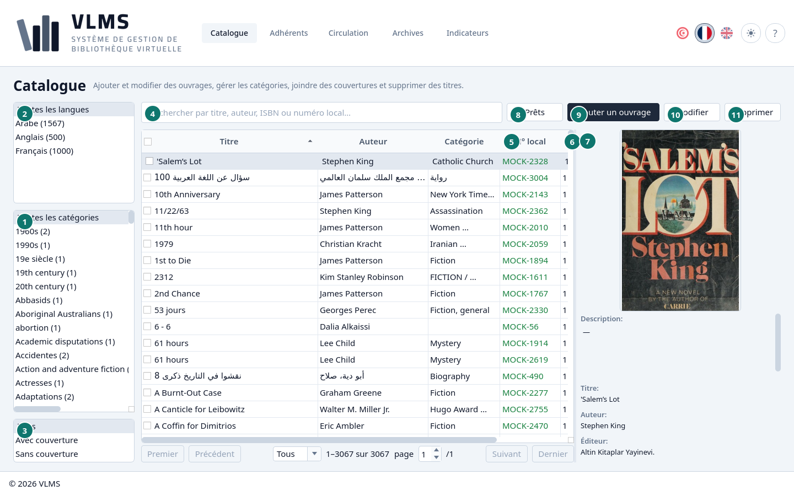
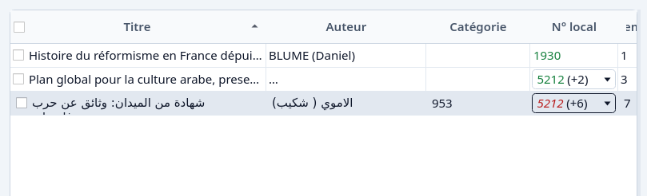
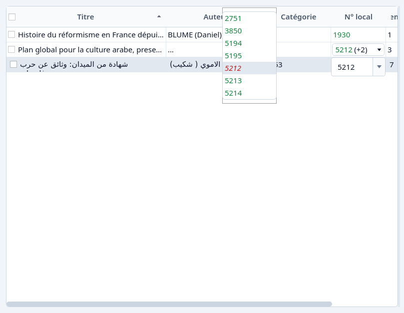
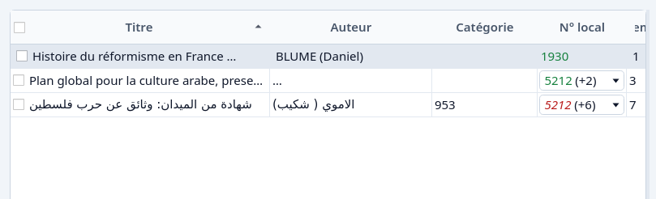
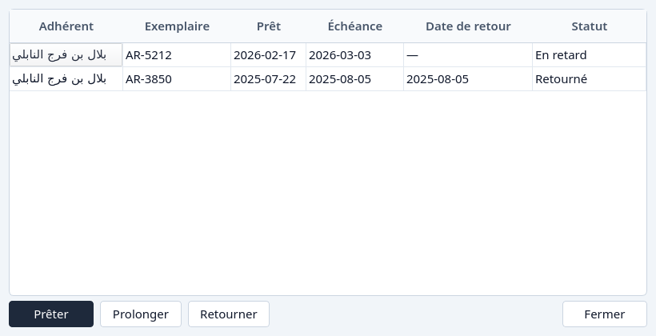

Catalogue
Les titres, leurs exemplaires et leurs numéros locaux.
Le Catalogue est la liste des titres encore en service. Chaque ligne est un titre. Les exemplaires sont dans la colonne du numéro local et dans le détail.


- Catégories. Toutes les catégories laisse chaque catégorie dans la liste. Choisissez-en une ou plusieurs pour la réduire.
- Langues. Toutes les langues, ou Arabe, Français, et toute autre langue que le catalogue contient.
- Couverture. Tous, Avec couverture ou Sans couverture.
- La recherche.
- N° local. Le numéro dont la cellule parle. Voir Numéros locaux.
- Exemplaires et Disponibles. Exemplaires compte chaque exemplaire encore en service. Disponibles compte ceux qui sont encore sur le rayon.
- Le détail du titre surligné.
- Prêts
- Ajouter un ouvrage
- Modifier
- Supprimer
Recherche
La recherche suit le titre, l'auteur, l'ISBN et le numéro local. Un numéro tapé en chiffres est cherché en plus du texte. S'il existe exactement, seules les lignes qui le portent restent. Sinon, les numéros qui commencent par ces chiffres s'ouvrent. Les deux ne se mélangent pas.


Le numéro local
La cellule montre un numéro, ou un numéro suivi d'un compte entre parenthèses quand le titre en a plusieurs. Un clic ouvre la liste. Choisir un numéro le marque dans la cellule. Cela ne change pas l'ordre de la liste, et le choix disparaît quand la liste est rechargée.


Un numéro vert est sur le rayon. Un numéro rouge et en italique est sorti. L'italique reste lisible en gris ou pour un lecteur qui ne distingue pas le rouge du vert. Voir Numéros locaux.


Prêts
Prêts suit le titre surligné. Il s'ouvre même quand le titre n'a jamais été emprunté, et il propose Prêter depuis là. La liste est chaque prêt de chaque exemplaire que le titre a eu, y compris les exemplaires et les prêts qui ont depuis été archivés.


Fermer quitte la fenêtre. Prêter depuis ici est Prêter un ouvrage. Ajouter un titre est Ajouter un ouvrage. Le retirer est Retirer.